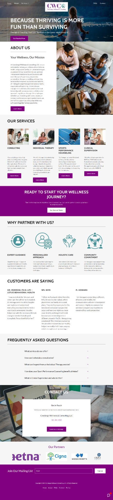

Real project · Wellness service website
Concierge Wellness & Consulting
A multi-service wellness site arranged to keep the offer understandable even though the business serves more than one need.
What the business needed
The website needed to present several wellness and consulting services while helping visitors understand where they fit instead of facing a long undifferentiated list.
What was built
The content was grouped into clearer service paths with supporting explanation, trust cues and contact actions that give the broader offer a more manageable structure.
What is easier now
A visitor can scan the available help, identify the service most relevant to them and move toward contact without having to understand the entire business first.